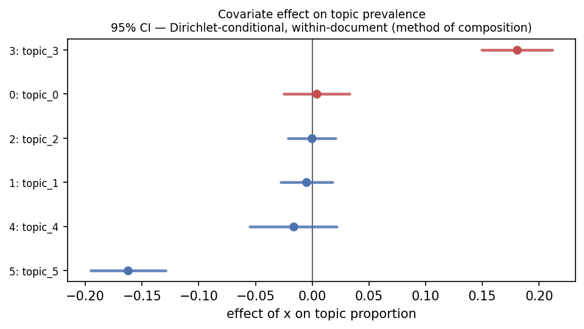

Visualization¶
topica.viz is a manuscript-first visualization toolkit: an honest successor to
pyLDAvis that works across model families, exports the numbers behind every
figure, and refuses to draw what it cannot justify.
import topica.viz as viz
viz.coherence_frontier(model, texts).to_png("quality.png")
viz.effect_plot(model, corpus, formula="~ year", data=meta).to_png("effects.pdf")
viz.term_barchart(model, topic=3, mode="frex").to_frame()
Every static view is a panel with three renderers:
.to_frame()— a pandas DataFrame of the numbers behind the picture. Always available; this is your reproducibility and reviewer-armor..to_png(path)— a matplotlib figure (PNG / PDF / SVG by extension). The publication renderer..to_html(path)— an interactive (Plotly) build, for the few views interaction genuinely helps. Needs thetopica[viz]extra.
A few views are interactive-only composites (for example term_topic_browser,
the linked topic/term dashboard) and expose just .to_html(path); the static and
data renderers for that content live in the standalone topic_similarity and
term_barchart panels.
Install the toolkit with pip install topica[viz] (matplotlib, pandas, scipy,
and plotly for the interactive .to_html() builds), or pip install topica[all]
for everything.
Honest by capability¶
The panels read a per-model capability descriptor (viz.capabilities(model))
and switch their statistics and labels on it, so they never overclaim:
- A c-TF-IDF
topic_word(BERTopic / Top2Vec) is not a probability, so the FREX / lift / relevance modes are disabled and the bars are labeled "c-TF-IDF weight," not "P(w | topic)." (The matrix is row-normalized to sum to one for surface compatibility with the other models' diagnostics; that normalization is a convenience, not a probability claim.) - An effect-plot confidence interval is drawn only where a θ posterior exists.
For an embedding/cluster model the panel shows point estimates and says so; pass
method="bootstrap"for intervals. A topic the bootstrap flags as unreliable is drawn as a ghosted point, not a band. - The uncertainty is labeled for what it is — a Gibbs model's Dirichlet-conditional (within-document) uncertainty is not a logistic-normal posterior.
The covariate effect plot¶
The results figure for an STM paper: each topic's prevalence response to a covariate, with method-of-composition intervals, diverging color centered at zero.
ep = viz.effect_plot(model, corpus, formula="~ party", data=meta, nsims=50)
ep.to_png("effects.pdf") # publication figure
ep.to_frame() # coef / se / ci / reliable per topic

Choosing K¶
Reuse search_k / quality_frontier, with the data export and a clean figure:
rows = topica.search_k(docs, ks=[10, 20, 30, 40], held_out=test_docs)
viz.search_k(rows).to_png("choose_k.png") # coherence / exclusivity / perplexity vs K
viz.coherence_frontier(model, texts).to_png("frontier.png") # per-topic, defend dropping topics
The pyLDAvis replacement: terms + a seriated similarity heatmap¶
Instead of a spurious 2-D "intertopic map," topica shows the K×K topic-similarity matrix at full fidelity, ordered by hierarchical clustering (√Jensen-Shannon for probability topics, cosine for c-TF-IDF), paired with a term barchart:
viz.topic_similarity(model).to_png("similarity.png")
viz.term_barchart(model, topic=3, mode="frex", error_bars=True).to_png("terms.png")
# interactive: the seriated heatmap for the overview, a dropdown to read a topic's words
viz.term_topic_browser(model).to_html("explore.html")
error_bars=True adds top-word inclusion-probability bars (a bootstrap, so it is
off by default).
Topic health: dead and duplicate topics¶
Two failure modes the headline table hides — topics with near-zero mass, and pairs of topics whose word distributions are near-identical. Both are routine (HDP returns many near-zero-mass topics by construction) and both are things a reviewer expects you to have checked:
h = viz.topic_health(model, min_mass_frac=0.01, dup_threshold=0.9)
h.to_png("health.png") # mass-share bars, dead and duplicate flagged
h.to_frame() # mass / hard_count / nearest_topic / nearest_cosine / flag
h.duplicates() # [(a, b, cosine), ...] near-duplicate pairs
Prevalence across groups and over time¶
A groups × topics heatmap, and per-topic prevalence trajectories as small multiples
(the readable replacement for a streamgraph). Pass corpus= and nsims= to widen
the estimates by the method of composition:
viz.prevalence_heatmap(model, groups=meta["region"]).to_png("by_region.png")
viz.topics_over_time(model, timestamps=meta["year"]).to_png("over_time.png")
# CI ribbons (method of composition), Gibbs models need the corpus for theta draws
viz.topics_over_time(model, meta["year"], corpus=corpus, nsims=50).to_png("over_time_ci.png")
Topic correlation, honestly¶
Raw across-document θ correlation is compositionally biased: the sum-to-one
constraint forces a spurious negative correlation (about −1/(K−1) even under
independence). topic_correlation offers the closure-corrected alternatives,
drawn as a zero-centered diverging heatmap:
viz.topic_correlation(model, method="clr").to_png("corr.png") # default, closure-corrected
viz.topic_correlation(model, method="partial").to_png("partial.png") # others held fixed
viz.topic_correlation(model, method="eta").to_png("eta.png") # CTM/STM logistic-normal Σ
viz.topic_correlation(model, method="raw") # the biased estimate, labeled as such
It is refused for hard/degenerate-θ cluster models, where topic correlation is not meaningful — use the topic-similarity heatmap there instead.
The document map¶
A 2-D projection of the document cloud (a supplement figure), to see whether the documents separate the way the topics claim. The projection runs in topica's own Rust core — there is no Python UMAP/sklearn dependency:
# count / soft-theta model: projects the clr-transformed theta simplex
viz.document_map(model, method="pca").to_png("map.png")
# embedding model: pass the doc embeddings you fit with (models do not retain them)
viz.document_map(bertopic, doc_embeddings=emb, method="umap").to_png("map.png")
# interactive WebGL scatter (Plotly), colored by dominant topic
viz.document_map(model, doc_embeddings=emb).to_html("map.html")
The same projection is available as a standalone primitive, topica.project:
method="pca" (default) is deterministic and distance-faithful; the title reports
the fraction of variance the two axes carry. method="umap" and method="tsne"
preserve local neighborhoods but distort global geometry (between-cluster distances
and cluster sizes are not meaningful) and are not reproducible across runs — the
panel says so and displays the seed, and project warns. Density is shown with
alpha clouds / hexbin, never convex hulls. Past eight topics the default grays
everything; pass highlight_topic= to color one. Large corpora are
stratified-subsampled (by dominant topic, including -1) with a "showing N of D"
badge. A hard-θ cluster model with no embeddings is refused.
The document inspector¶
Read one document the way the model read it: its θ mixture, its words shaded by the
topic each is most attributed to (argmax_t p(t | w, d), computed from θ and φ), and
the documents most associated with its dominant topic:
di = viz.document_inspector(model, texts, doc=12)
di.to_png("doc12.png")
di.to_frame() # per-token: word / in_vocab / dominant_topic / p_topic
di.theta # the document's topic proportions
di.neighbors # find_thoughts for the dominant topic
It is refused for hard/degenerate-θ cluster models, where a per-token mixed- membership attribution is not meaningful.
Content covariate: how a topic is worded by group¶
For an STM or SAGE content model, the same topic is phrased differently across a
document covariate (party, decade, outlet). Rather than collapse to a reference
snapshot, this panel shows p(w | topic, group) for the union of each group's top
words as a words × groups heatmap:
cc = viz.content_covariate(stm_or_sage, topic=3, n=10)
cc.to_png("topic3_by_group.png")
cc.to_frame() # group / word / prob / in_group_top
cc.matrix() # words × groups wide table
cc.contrast(model, "dem", "rep") # words most distinguishing the two groups
It is refused for a model fit without a content covariate (a prevalence-only STM, or any non-content model).
One-call report¶
dashboard() introspects the descriptor and your arguments to assemble the
applicable panels:
report = viz.dashboard(model, texts, corpus=corpus, formula="~ year", data=meta,
groups=meta["region"], timestamps=meta["year"])
report.to_html("report.html") # interactive browser + static panels, self-contained
report.to_png("report.png") # the static panels stacked
report.to_frame() # {panel_name: DataFrame}
The topic-similarity heatmap, term barchart, and topic-health panels are always
included; the coherence frontier (with texts), effect plot (with a design), group
heatmap (with groups), time small-multiples (with timestamps), and the honest
correlation layer (for soft-θ models) are added by introspecting what you pass.